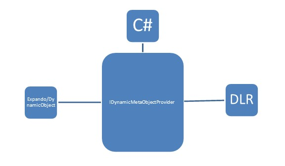

C# 4.0 introduces a new type of object: dynamic. More information can be found in MSDN. The dynamic object offers a way to get or set values dynamically using CallSites and binders from the C# language service. Using this service, we are able to generate dynamic compile-time execution and representing that acts as an object to GridDataControl. By enabling it to work with dynamic objects, the grid seamlessly allows working with any DLR-based language.
The IDynamicMetaObjectProvider interface defines the interface between the dynamic run-time types.

Figure 115: Dynamic Keyword Suppor
Usage Scenarios
Define a List<dynamic> object to be set as ItemsSource for the grid.
|
[C# ]
var list = new List<dynamic>(); dynamic d = new ExpandoObject(); d.Name = "Robert"; d.Age = 24; d.Occupation = "Software Engineer"; d.HasCar = true; dynamic d1 = new ExpandoObject(); d1.Name = "James"; d1.Age = 25; d1.Occupation = "Business"; d1.HasCar = false; list.Add(d); list.Add(d1); this.dataGrid.ItemsSource = list; |
Features that work with dynamic objects
· Sorting
· Filtering
· Grouping
· Summaries
· Conditional formatting
The internal view uses LINQ expression syntax to generate operations, this works well for including custom LINQ expressions inside operations such as sorting, filtering, grouping, etc.
Specific Dynamic Type Handling
Column Type
Since the collections are dynamic, we need to specify the proper type for the column to work properly in all scenarios. GridDataVisibleColumn provides a DataType property to specify the type for the column.
|
[XAML]
<syncfusion:GridDataVisibleColumn MappingName="OrderDate" DataType="DateTime" /> |
Handling Relations
Relations have to be handled in XAML or C#. The AutoPopulateRelations property will not work on dynamic object types.
|
[XAML]
<syncfusion:GridDataControl.Relations> <syncfusion:GridDataRelation RelationalColumn="OrderDetails" /> </syncfusion:GridDataControl.Relations> |